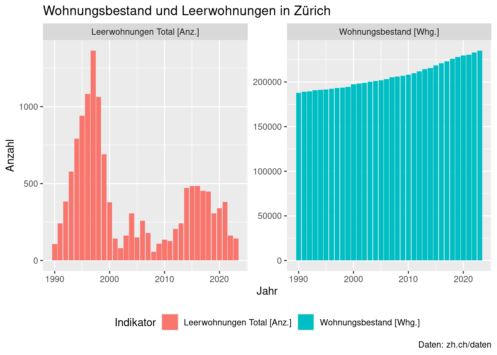

# source() erlaubt es uns, Code aus einer anderen Datei zu laden
source(here::here("analyse/01-daten-aufbereitung.R"))
source(here::here("analyse/02-bfs-nummern-lesen.R"))
# Code um den Namen der Gemeinde mittels des Parameter zu erhalten
gemeinde_name <- gemeinde_bfs_nr |>
filter(bfs_nr == params$bfs_nr) |>
pull(gebiet_name)
# Code um die Daten für die Gemeinde mittels des Parameter zu erhalten
daten_in <- leerwohungen_wohnungsbestand |>
filter(bfs_nr == params$bfs_nr) Bericht für Gemeinde Zürich
Wohnungsbestand und Leerwohnungen im Jahr 2020
Der Bericht enthält eine Visualisierung der Daten erstellt mittels R package ggplot2 und einer zusammenfassende Tabelle erstellt mit R package gt basierend auf einer deskriptiven Analyse (z.B. Mittelwert, Standardabweichung, Median, etc.).
Daten Tranformation
daten_in_prozent <- daten_in |>
group_by(indikator_jahr, indikator_id, indikator_name) |>
summarise(
summe = sum(indikator_value)
) |>
group_by(indikator_jahr) |>
mutate(prozent = summe / sum(summe) * 100) |>
mutate(rate = summe / lead(summe)) |>
ungroup()Visualisierung
# Code für inline code
# Code um die summe der Leerwohnungen in einem bestimmen Jahr zu erhalten
leerwohungen_anzahl <- daten_in_prozent |>
filter(indikator_jahr == params$jahr) |>
filter(indikator_id == 381) |>
pull(summe)
# Code um die Leerwohnungsrate in einem bestimmen Jahr zu erhalten
rate <- daten_in_prozent |>
filter(indikator_jahr == params$jahr) |>
filter(indikator_id == 140) |>
pull(rate)Der Leerwohnungsbestand in Zürich im Jahr 2020 beträgt 339. Pro 677 Wohnungen, ist eine Wohnung leer.
ggplot(data = daten_in_prozent,
mapping = aes(x = indikator_jahr,
y = summe,
fill = indikator_name)) +
geom_col() +
facet_wrap(~indikator_name, scales = "free_y") +
labs(title = paste("Wohnungsbestand und Leerwohnungen in", gemeinde_name),
x = "Jahr",
y = "Anzahl",
fill = "Indikator",
caption = "Daten: zh.ch/daten") +
theme(legend.position = "bottom")
Tabelle
daten_in |>
group_by(indikator_jahr, indikator_name) |>
summarise(
sum = sum(indikator_value)
) |>
mutate(prozent = sum / sum(sum) * 100) |>
ungroup() |>
gt::gt() |>
gt::fmt_number(columns = vars(sum), decimals = 0) |>
gt::fmt_number(columns = vars(prozent), decimals = 1) |>
gt::tab_header(title = paste("Zusammenfassung für Gemeinde", gemeinde_name)) | Zusammenfassung für Gemeinde Zürich | |||
|---|---|---|---|
| indikator_jahr | indikator_name | sum | prozent |
| 1990 | Leerwohnungen Total [Anz.] | 106 | 0.1 |
| 1990 | Wohnungsbestand [Whg.] | 188,036 | 99.9 |
| 1991 | Leerwohnungen Total [Anz.] | 241 | 0.1 |
| 1991 | Wohnungsbestand [Whg.] | 189,067 | 99.9 |
| 1992 | Leerwohnungen Total [Anz.] | 384 | 0.2 |
| 1992 | Wohnungsbestand [Whg.] | 189,663 | 99.8 |
| 1993 | Leerwohnungen Total [Anz.] | 578 | 0.3 |
| 1993 | Wohnungsbestand [Whg.] | 190,584 | 99.7 |
| 1994 | Leerwohnungen Total [Anz.] | 791 | 0.4 |
| 1994 | Wohnungsbestand [Whg.] | 191,155 | 99.6 |
| 1995 | Leerwohnungen Total [Anz.] | 942 | 0.5 |
| 1995 | Wohnungsbestand [Whg.] | 191,814 | 99.5 |
| 1996 | Leerwohnungen Total [Anz.] | 1,082 | 0.6 |
| 1996 | Wohnungsbestand [Whg.] | 192,622 | 99.4 |
| 1997 | Leerwohnungen Total [Anz.] | 1,364 | 0.7 |
| 1997 | Wohnungsbestand [Whg.] | 193,264 | 99.3 |
| 1998 | Leerwohnungen Total [Anz.] | 1,063 | 0.5 |
| 1998 | Wohnungsbestand [Whg.] | 193,846 | 99.5 |
| 1999 | Leerwohnungen Total [Anz.] | 690 | 0.4 |
| 1999 | Wohnungsbestand [Whg.] | 194,608 | 99.6 |
| 2000 | Leerwohnungen Total [Anz.] | 378 | 0.2 |
| 2000 | Wohnungsbestand [Whg.] | 197,238 | 99.8 |
| 2001 | Leerwohnungen Total [Anz.] | 143 | 0.1 |
| 2001 | Wohnungsbestand [Whg.] | 198,203 | 99.9 |
| 2002 | Leerwohnungen Total [Anz.] | 81 | 0.0 |
| 2002 | Wohnungsbestand [Whg.] | 198,930 | 100.0 |
| 2003 | Leerwohnungen Total [Anz.] | 163 | 0.1 |
| 2003 | Wohnungsbestand [Whg.] | 200,385 | 99.9 |
| 2004 | Leerwohnungen Total [Anz.] | 307 | 0.2 |
| 2004 | Wohnungsbestand [Whg.] | 200,956 | 99.8 |
| 2005 | Leerwohnungen Total [Anz.] | 151 | 0.1 |
| 2005 | Wohnungsbestand [Whg.] | 201,841 | 99.9 |
| 2006 | Leerwohnungen Total [Anz.] | 259 | 0.1 |
| 2006 | Wohnungsbestand [Whg.] | 203,384 | 99.9 |
| 2007 | Leerwohnungen Total [Anz.] | 180 | 0.1 |
| 2007 | Wohnungsbestand [Whg.] | 205,182 | 99.9 |
| 2008 | Leerwohnungen Total [Anz.] | 57 | 0.0 |
| 2008 | Wohnungsbestand [Whg.] | 205,950 | 100.0 |
| 2009 | Leerwohnungen Total [Anz.] | 109 | 0.1 |
| 2009 | Wohnungsbestand [Whg.] | 206,759 | 99.9 |
| 2010 | Leerwohnungen Total [Anz.] | 136 | 0.1 |
| 2010 | Wohnungsbestand [Whg.] | 208,090 | 99.9 |
| 2011 | Leerwohnungen Total [Anz.] | 125 | 0.1 |
| 2011 | Wohnungsbestand [Whg.] | 209,701 | 99.9 |
| 2012 | Leerwohnungen Total [Anz.] | 206 | 0.1 |
| 2012 | Wohnungsbestand [Whg.] | 211,942 | 99.9 |
| 2013 | Leerwohnungen Total [Anz.] | 242 | 0.1 |
| 2013 | Wohnungsbestand [Whg.] | 214,470 | 99.9 |
| 2014 | Leerwohnungen Total [Anz.] | 471 | 0.2 |
| 2014 | Wohnungsbestand [Whg.] | 215,608 | 99.8 |
| 2015 | Leerwohnungen Total [Anz.] | 483 | 0.2 |
| 2015 | Wohnungsbestand [Whg.] | 218,586 | 99.8 |
| 2016 | Leerwohnungen Total [Anz.] | 484 | 0.2 |
| 2016 | Wohnungsbestand [Whg.] | 220,940 | 99.8 |
| 2017 | Leerwohnungen Total [Anz.] | 454 | 0.2 |
| 2017 | Wohnungsbestand [Whg.] | 222,953 | 99.8 |
| 2018 | Leerwohnungen Total [Anz.] | 447 | 0.2 |
| 2018 | Wohnungsbestand [Whg.] | 225,943 | 99.8 |
| 2019 | Leerwohnungen Total [Anz.] | 306 | 0.1 |
| 2019 | Wohnungsbestand [Whg.] | 227,889 | 99.9 |
| 2020 | Leerwohnungen Total [Anz.] | 339 | 0.1 |
| 2020 | Wohnungsbestand [Whg.] | 229,657 | 99.9 |
| 2021 | Leerwohnungen Total [Anz.] | 381 | 0.2 |
| 2021 | Wohnungsbestand [Whg.] | 230,525 | 99.8 |
| 2022 | Leerwohnungen Total [Anz.] | 161 | 0.1 |
| 2022 | Wohnungsbestand [Whg.] | 232,937 | 99.9 |
| 2023 | Leerwohnungen Total [Anz.] | 144 | 0.1 |
| 2023 | Wohnungsbestand [Whg.] | 235,138 | 99.9 |